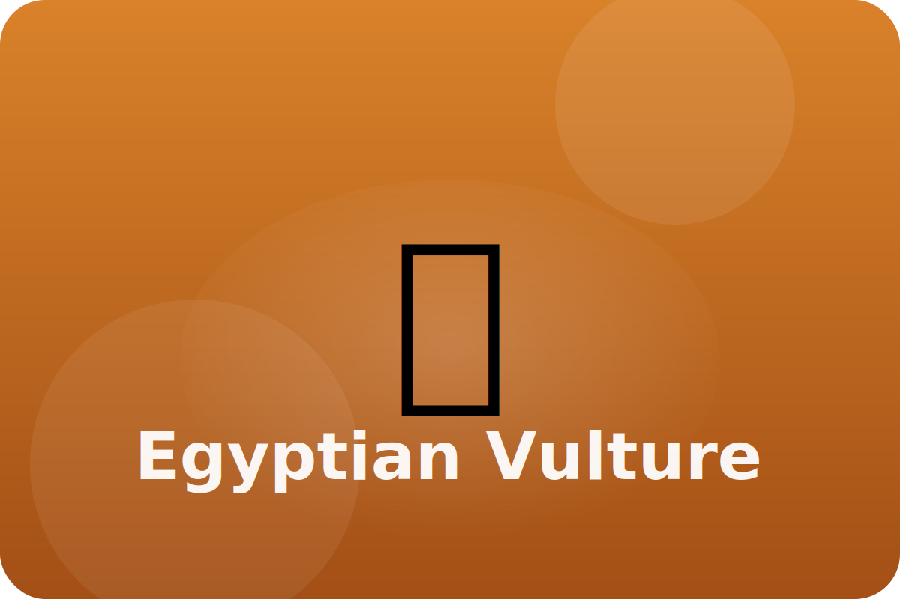

Desert
Cleaning the desert
Egyptian vultures fly high looking for leftovers and eggs. They even use tools to open tough shells.
Tool Use
They drop rocks on ostrich eggs to crack them open for a special treat.
Featherless Face
Bare skin on the head stays clean when the bird reaches inside carcasses.
Soaring Wings
Wide wings let vultures ride warm air currents without flapping much, saving energy.
Keep exploring the Egyptian Vulture
Watch the Egyptian Vulture in action
Animal Facts - Vulture